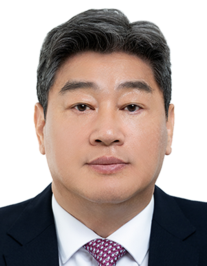
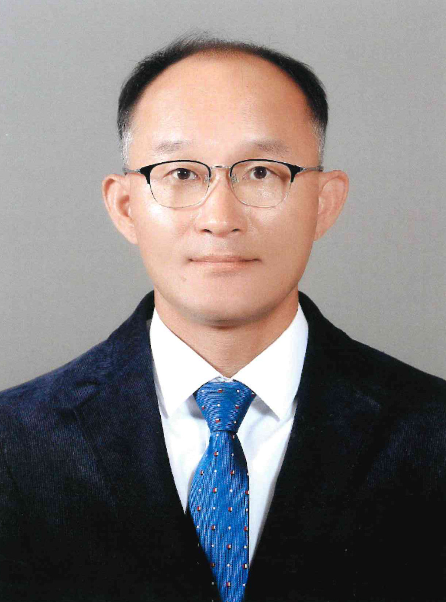
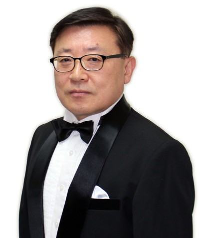

GREETING
축사
존경하는 선후배 동문 여러분, 그리고 오늘 이 무대의 주인공인 양정월계수합창단 여러분! 반갑습니다. 제40대 총동창회장 진광일입니다.
오늘 이렇게 아름다운 선율로 가득한 자리에 함께할 수 있어 매우 기쁘게 생각합니다.
음악은 언어를 넘어 마음을 연결하는 가장 순수한 표현예술입니다. 그중에서도 합창은
각자의 목소리가 조화를 이루며 하나의 감동을 만들어내는 예술로, 우리 사회가,
우리 양정 동창회가 지향해야 할 화합과 소통의 상징이라 할 수 있습니다.
더욱이 금년은 양정 창학 120주년을 맞이하는 해라 더욱 뜻깊은 자리인 것같습니다.
올해 연주회의 TITLE은 “하나의 양정, 영원의 이름”으로 알고 있습니다.
지금의 양정인에게는 절실히 필요한 슬로건입니다. 양정 총동창회의 지속적인 발전을
위하여 하나의 양정이 되어 힘차게 전진하고자 하는 5만 양정동문을 기원하는 연주회가
아닐까 싶습니다.
그동안 이 무대를 위해 헌신한 단장님, 지휘자님과 양정월계수합창단 단원 여러분의
노고에 깊은 감사의 말씀을 드립니다. 또한 꾸준히 관심과 성원을 보내주신 양정동문
여러분께도 진심으로 감사드립니다.
오늘의 공연이 바쁜 일상 속에서 잠시나마 따뜻한 울림과 감동으로 남기를 바랍니다.
동문 여러분 모두의 앞날에 건강과 행복이 함께하길 바라며, 양정월계수합창단의
앞길에도 무궁한 영광이 함께하길 기원합니다.
감사합니다.
2025년 11월 29일

제40대 양정총동창회장 진광일
격려사
안녕하십니까.
양정 월계수합창단의 제10회 정기공연을 진심으로 축하드립니다.
붉은 낙엽이 드물게 흩날리는 늦가을, 사랑하는 모교 교정에서 열리는 이번 제10회 정기공연은 더욱 특별한 의미를 지닙니다.
이 뜻깊은 자리에 함께해 주신 양정 동문 선후배님들, 교직원, 학부모님,
그리고 재학생 여러분께 깊이 감사드립니다. 오늘의 무대가 우리 모두에게 따뜻한 감동과 행복을 선사하는 시간이 되길 바랍니다.
월계수합창단은 1974년, 음악 교육에 대한 열정이 남다르셨던 고(故) 안경재 선생님의 지도로 창단된 양정의 대표적 동아리입니다.
이후 합창에 대한 사랑과 헌신으로 정기공연의 전통을 이어온 동문
여러분께 진심으로 존경과 감사를 드립니다.
현재 양정은 자율형사립고로서의 위상을 새롭게 다지며, 미래를 향해 힘차게 도약하고 있습니다.
이러한 시기에 협력과 조화, 배려와 책임의 가치를 체득하는 합창 활동은 우리 양정이 지향하는 교육의
본질과 맞닿아 있습니다. 앞으로도 월계수합창단의 지속적인 발전을 응원하며, 학교에서도 아낌없는 지지와 관심을 보내겠습니다.
깊어가는 가을 저녁, 아름다운 화음으로 마음을 물들여 주신 모든 분들께 감사드리며,
월계수합창단 제10회 정기공연의 성공을 다시 한 번 진심으로 축하드립니다.
2025년 11월 29일
양정고등학교 교장대행 박윤근
환영사
안녕하십니까? 올해는 우리 양정학교가 최초의 민족사학에서 최고의 명문사학으로 거듭나는 여정 속에
창학 120주년을 맞이하였으며 양정월계수합창단 역시 1972년 합창단 1기를 시작으로 50년을 훌쩍
넘어 열번째 정기 연주회를 개최하게 된 뜻 깊은 한해입니다. 그래서 오늘 여러분과 함께하는 이 음악의 축제가
더욱 뜻 깊고 의미가 있다고 생각합니다.
이미 느끼셨겠지만 금번 연주회는 음악이라는 매개를 통해서 과거를 돌아보고, 현재를 직시하며
앞으로 우리의 미래를 내다보고자 하였습니다. 그래서 이번 타이틀이 “하나의 양정, 영원의 이름”입니다.
이는 우리의 역사를 통해서도 그대로 느낄 수 있듯이 일제 강점기에도 수 많은 애국지사, 국가인재를
양성, 배출하였고 지금까지 5만여 양정인들이 전 세계를 무대로 활동을 하고 있습니다. 이런 훌륭한
120년 역사와 전통을 기반으로 이제는 앞으로 다가올 우리 다음 세대들의 미래를 걱정하고 준비할 때입니다.
우리 선배님들께서 그러하셨듯이 개혁과 변화를 두려워말고 슬기롭게 헤쳐나갈 때 비로소 우리
후배들의 앞날은 더욱 밝아지고 한층 더 성숙해 집니다
이 자리에는 우리 양정과 관련된 분들도 많으시나 그렇지 않으신 분들도 계실 것입니다.
그러나 이 자리에 함께해 주신 분들이라면 누구라도 충분히 공감하시고 이해하셨으리라 믿으면서
이 음악의 향연에 기꺼이 초대하겠습니다.
끝으로 이런 공연장소를 기꺼히 제공해주신 양정중고등학교 교장, 교감선생님을 비롯한
모든 관계자 여러분들께 진심으로 감사드리겠습니다.
2025년 11월 29일
양정월계수합창단 단장 64회 박세현